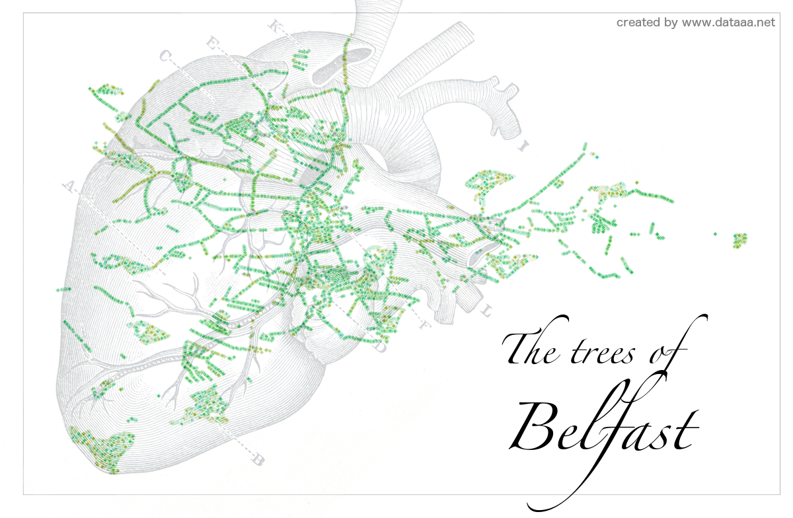

The trees of Belfast
I can't show you the results of the data analysis I performed at the Urban Data Hackathon (see previous post) due to a non-disclosure agreement, but I can show you a visualisation I made with one of Belfast City Council's open datasets: their street trees dataset.
Using R and a CC BY-SA 2.0 image of a heart, I made this map of Belfast. Note that this only shows street trees and so many of Belfast's parks are not represented. Enjoy!
